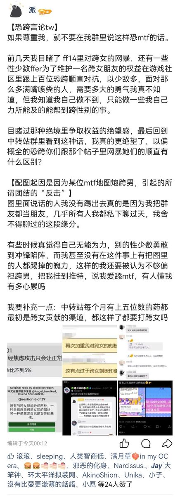

自己发的时候笑了没，还在那假装好人，又开始为网暴发声了开始我舍不得跟大家的缘分了，那我之前在群里没发过任何恐跨言论的情况下你怎么就放纵别人网暴我？踢我的时候怎么就忘了什么缘分了，宁愿相信一个刚进群的对我的造谣也不愿意相信你的两个管理员。跟红薯妹一样玩的一手好双标之后卖惨，最符合指派性别的一集。
觉得无能为力觉得心累可以把群解散了，只要你这群在一天，我还活着一天，我就会继续挂你，反正我又不gd又不会被你卡脖子，我不需要你们任何跨男跨女的怜悯来买东西，跟你们这帮废物不一样捏😋
觉得无能为力觉得心累可以把群解散了，只要你这群在一天，我还活着一天，我就会继续挂你，反正我又不gd又不会被你卡脖子，我不需要你们任何跨男跨女的怜悯来买东西，跟你们这帮废物不一样捏😋
